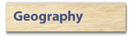
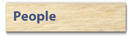
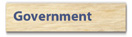
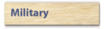

![[Country Flag of Netherlands Antilles]](../flags/nt-lgflag.jpg)
| Netherlands Antilles |
|
|
      | ![[Country map of Netherlands Antilles]](../maps/nt-map.jpg) | |
| Introduction |
Background: Once the center of the Caribbean slave trade, the island of Curacao was hard hit by the abolition of slavery in 1863. Its prosperity (and that of neighboring Aruba) was restored in the early 20th century with the construction of oil refineries to service the newly discovered Venezuelan oil fields. The island of Sint Maarten is shared with France (whose northern portion is named Saint Martin and is part of Guadeloupe).
| Geography |
Location: Caribbean, two island groups in the Caribbean Sea - one includes Curacao and Bonaire north of Venezuela and the other is east of the Virgin Islands
Geographic coordinates: 12 15 N, 68 45 W
Map references: Central America and the Caribbean
Area:
total:
960 sq km
land:
960 sq km
water:
0 sq km
note:
includes Bonaire, Curacao, Saba, Sint Eustatius, and Sint Maarten (Dutch part of the island of Saint Martin)
Area - comparative: more than five times the size of Washington, DC
Land boundaries:
total:
10.2 km
border countries:
Guadeloupe (Saint Martin) 10.2 km
Coastline: 364 km
Maritime claims:
exclusive fishing zone:
12 nm
territorial sea:
12 nm
Climate: tropical; ameliorated by northeast trade winds
Terrain: generally hilly, volcanic interiors
Elevation extremes:
lowest point:
Caribbean Sea 0 m
highest point:
Mount Scenery 862 m
Natural resources: phosphates (Curacao only), salt (Bonaire only)
Land use:
arable land:
10%
permanent crops:
0%
permanent pastures:
0%
forests and woodland:
0%
other:
90% (1993 est.)
Irrigated land: NA sq km
Natural hazards: Curacao and Bonaire are south of Caribbean hurricane belt and are rarely threatened; Sint Maarten, Saba, and Sint Eustatius are subject to hurricanes from July to October
Environment - current issues: NA
| People |
Population: 210,134 (July 2000 est.)
Age structure:
0-14 years:
25% (male 27,320; female 26,230)
15-64 years:
67% (male 66,653; female 73,813)
65 years and over:
8% (male 6,701; female 9,417) (2000 est.)
Population growth rate: 1.01% (2000 est.)
Birth rate: 16.94 births/1,000 population (2000 est.)
Death rate: 6.42 deaths/1,000 population (2000 est.)
Net migration rate: -0.42 migrant(s)/1,000 population (2000 est.)
Sex ratio:
at birth:
1.05 male(s)/female
under 15 years:
1.04 male(s)/female
15-64 years:
0.9 male(s)/female
65 years and over:
0.71 male(s)/female
total population:
0.92 male(s)/female (2000 est.)
Infant mortality rate: 11.74 deaths/1,000 live births (2000 est.)
Life expectancy at birth:
total population:
74.72 years
male:
72.56 years
female:
76.99 years (2000 est.)
Total fertility rate: 2.09 children born/woman (2000 est.)
Nationality:
noun:
Netherlands Antillean(s)
adjective:
Netherlands Antillean
Ethnic groups: mixed black 85%, Carib Amerindian, white, East Asian
Religions: Roman Catholic, Protestant, Jewish, Seventh-Day Adventist
Languages: Dutch (official), Papiamento (a Spanish-Portuguese-Dutch-English dialect) predominates, English widely spoken, Spanish
Literacy:
definition:
age 15 and over can read and write
total population:
98%
male:
98%
female:
99% (1981 est.)
| Government |
Country name:
conventional long form:
none
conventional short form:
Netherlands Antilles
local long form:
none
local short form:
Nederlandse Antillen
Data code: NT
Dependency status: part of the Kingdom of the Netherlands; full autonomy in internal affairs granted in 1954
Government type: parliamentary
Capital: Willemstad
Administrative divisions:
none (part of the Kingdom of the Netherlands)
note:
each island has its own government
Independence: none (part of the Kingdom of the Netherlands)
National holiday: Queen's Day, 30 April (1938)
Constitution: 29 December 1954, Statute of the Realm of the Netherlands, as amended
Legal system: based on Dutch civil law system, with some English common law influence
Suffrage: 18 years of age; universal
Executive branch:
chief of state:
Queen BEATRIX Wilhelmina Armgard of the Netherlands (since 30 April 1980), represented by Governor General Jaime SALEH (since NA October 1989)
head of government:
Prime Minister Miguel POURIER (since 8 November 1999)
cabinet:
Council of Ministers elected by the Staten
elections:
the monarch is hereditary; governor general appointed by the monarch for a six-year term; following legislative elections, the leader of the majority party is usually elected prime minister by the Staten; election last held 30 January 1998 (next to be held by NA 2002)
election results:
Miguel POURIER elected prime minister; percent of legislative vote - NA
note:
government coalition - PDB, DP-St. M, FOL, PLKP, PNP
Legislative branch:
unicameral States or Staten (22 seats; members are elected by popular vote to serve four-year terms)
elections:
last held 30 January 1998 (next to be held by NA 2002)
election results:
percent of vote by party - NA; seats by party - PAR 4, PNP 3, SPA 1, PDB 2, UPB 1, MAN 2, PLKP 3, WIPM 1, SEA 1, DP-St. M 2, FOL 2; no party won enough seats to form a government
note:
the government of Prime Minister Miguel POURIER is a coalition of several parties
Judicial branch: Joint High Court of Justice, judges appointed by the monarch
Political parties and leaders:
Antillean Restructuring Party or PAR [Miguel POURIER]; C 93 [Stanley BROWN]; Democratic Party of Bonaire or PDB [Jopi ABRAHAM]; Democratic Party of Curacao or DP [Ephraim JONCKHEER]; Democratic Party of Sint Eustatius or DP-St. E [Julian WOODLEY]; Democratic Party of Sint Maarten or DP-St. M [Sarah WESTCOTT-WILLIAMS]; Foundation Energetic Management Anti-Narcotics or FAME [Eric LODEWIJKS]; Labor Party People's Crusade or PLKP [Errol COVA]; National People's Party or PNP [Suzy ROMER]; New Antilles Movement or MAN [Domenico Felip Don MARTINA]; Nos Patria [Chin BEHILIA]; Patriotic Movement of Sint Maarten or SPA [William MARLIN]; Patriotic Union of Bonaire or UPB [Rudy ELLIS]; People's Party or PAPU [Richard HODI]; Pro Curacao Party or PPK [Winston LOURENS]; Saba Democratic Labor Movement [Steve HASSELL]; Saba Unity Party [Carmen SIMMONDS]; St. Eustatius Alliance or SEA [Ingrid WHITFIELD]; Serious Alternative People's Party or SAPP [Julian ROLLOCKS]; Social Action Cause or KAS [Benny DEMEI]; Socialist Independent or SI [George HUECK]; Windward Islands People's Movement or WIPM [Ray HASSELL]; Workers' Liberation Front or FOL [Wilson GODETT, Jr.]
note:
political parties are indigenous to each island
International organization participation: Caricom (observer), ECLAC (associate), Interpol, IOC, UNESCO (associate), UPU, WMO, WToO (associate)
Diplomatic representation in the US: none (represented by the Kingdom of the Netherlands)
Diplomatic representation from the US:
chief of mission:
Consul General Barbara J. STEPHENSON
consulate(s) general:
J. B. Gorsiraweg #1, Curacao
mailing address:
P. O. Box 158, Willemstad, Curacao
telephone:
[599] (9) 4613066
FAX:
[599] (9) 4616489
Flag description: white, with a horizontal blue stripe in the center superimposed on a vertical red band, also centered; five white, five-pointed stars are arranged in an oval pattern in the center of the blue band; the five stars represent the five main islands of Bonaire, Curacao, Saba, Sint Eustatius, and Sint Maarten
| Economy |
Economy - overview: Tourism, petroleum transshipment, and offshore finance are the mainstays of this small economy, which is closely tied to the outside world. The islands enjoy a high per capita income and a well-developed infrastructure as compared with other countries in the region. Almost all consumer and capital goods are imported, with Venezuela, the US, and Mexico being the major suppliers. Poor soils and inadequate water supplies hamper the development of agriculture.
GDP: purchasing power parity - $2.4 billion (1998 est.)
GDP - real growth rate: -0.3% (1998 est.)
GDP - per capita: purchasing power parity - $11,800 (1998 est.)
GDP - composition by sector:
agriculture:
1%
industry:
15%
services:
84% (1996 est.)
Population below poverty line: NA%
Household income or consumption by percentage share:
lowest 10%:
NA%
highest 10%:
NA%
Inflation rate (consumer prices): 1.1% (1998)
Labor force: 89,000
Labor force - by occupation: agriculture 1%, industry 13%, services 86% (1994 est.)
Unemployment rate: 14.9% (1998 est.)
Budget:
revenues:
$710.8 million
expenditures:
$741.6 million, including capital expenditures of $NA (1997 est.)
Industries: tourism (Curacao, Sint Maarten, and Bonaire), petroleum refining (Curacao), petroleum transshipment facilities (Curacao and Bonaire), light manufacturing (Curacao)
Industrial production growth rate: NA%
Electricity - production: 1.02 billion kWh (1998)
Electricity - production by source:
fossil fuel:
100%
hydro:
0%
nuclear:
0%
other:
0% (1998)
Electricity - consumption: 949 million kWh (1998)
Electricity - exports: 0 kWh (1998)
Electricity - imports: 0 kWh (1998)
Agriculture - products: aloes, sorghum, peanuts, vegetables, tropical fruit
Exports: $303 million (f.o.b., 1998)
Exports - commodities: petroleum products 98% (1993)
Exports - partners: US 17.5%, Guatemala 8%, Costa Rica 6.5%, The Bahamas 4.6%, Jamaica 4.1%, Chile 3.4% (1998)
Imports: $1.3 billion (c.i.f., 1998)
Imports - commodities: crude petroleum 64%, food, manufactures (1993)
Imports - partners: Venezuela 35.3%, US 21%, Mexico 9.8%, Italy 5.4%, Netherlands 4.8%, Brazil 3.1% (1998)
Debt - external: $1.35 billion (1996)
Economic aid - recipient: $NA; note - Netherlands provided a $97 million aid package in 1996
Currency: 1 Netherlands Antillean guilder, gulden, or florin (NAf.) = 100 cents
Exchange rates: Netherlands Antillean guilders, gulden, or florins (NAf.) per US$1 - 1.790 (fixed rate since 1989)
Fiscal year: calendar year
| Communications |
Telephones - main lines in use: 75,000 (1995)
Telephones - mobile cellular: 11,727 (1995)
Telephone system:
generally adequate facilities
domestic:
extensive interisland microwave radio relay links
international:
2 submarine cables; satellite earth stations - 2 Intelsat (Atlantic Ocean)
Radio broadcast stations: AM 9, FM 4, shortwave 0 (1998)
Radios: 217,000 (1997)
Television broadcast stations: 3 (there is also a cable service which supplies programs received from various US satellite networks and two Venezuelan channels) (1997)
Televisions: 69,000 (1997)
Internet Service Providers (ISPs): 6 (1999)
| Transportation |
Railways: 0 km
Highways:
total:
600 km
paved:
300 km
unpaved:
300 km (1992 est.)
Ports and harbors: Kralendijk, Philipsburg, Willemstad
Merchant marine:
total:
110 ships (1,000 GRT or over) totaling 1,028,910 GRT/1,285,837 DWT
ships by type:
bulk 2, cargo 27, chemical tanker 2, combination ore/oil 3, container 16, liquified gas 4, multi-functional large load carrier 18, passenger 1, petroleum tanker 5, refrigerated cargo 26, roll-on/roll-off 6 (1999 est.)
note:
a flag of convenience registry; includes ships of 2 countries: Belgium owns 9 ships, Germany 1 (1998 est.)
Airports: 5 (1999 est.)
Airports - with paved runways:
total:
5
over 3,047 m:
1
1,524 to 2,437 m:
2
914 to 1,523 m:
1
under 914 m:
1 (1999 est.)
| Military |
Military branches: Royal Netherlands Navy, Marine Corps, Royal Netherlands Air Force, National Guard, Police Force
Military manpower - military age: 20 years of age
Military manpower - availability:
males age 15-49:
53,766 (2000 est.)
Military manpower - fit for military service:
males age 15-49:
30,137 (2000 est.)
Military manpower - reaching military age annually:
males:
1,534 (2000 est.)
Military - note: defense is the responsibility of the Kingdom of the Netherlands
| Transnational Issues |
Disputes - international: none
Illicit drugs: money-laundering center; transshipment point for South American drugs bound for the US and Europe